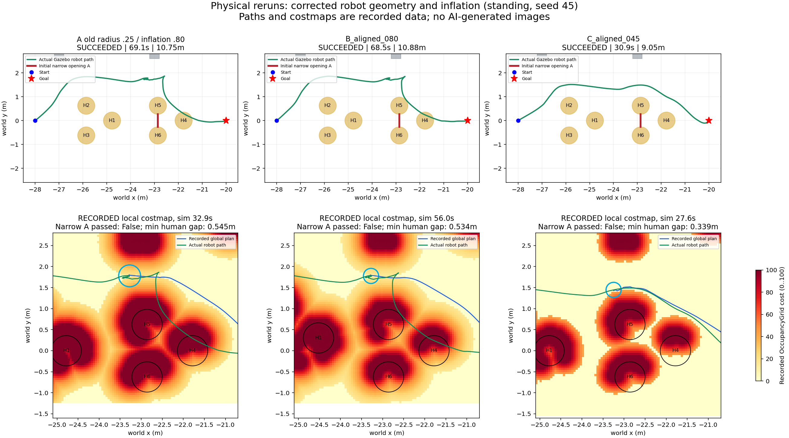

Đã chạy thật: sửa footprint và so sánh inflation
Robot tới đích ở cả hai lượt mới, nhưng vẫn chưa qua khe hẹp H5–H6. Inflation 0,45m giúp đường ngắn hơn và giảm thời gian trong lượt seed45 này. Chưa đủ để kết luận kết quả trên nhiều tình huống.
| Cấu hình | Thời gian mô phỏng | Quãng đường thật | Sai số đích thật | Qua khe A |
|---|
| A old radius .25 / inflation .80 | 69.07 s | 10.75 m | 7.0 cm | Không |
| B_aligned_080 | 68.50 s | 10.88 m | 9.5 cm | Không |
| C_aligned_045 | 30.89 s | 9.05 m | 6.7 cm | Không |
B: model/TF khớp SDF, radius0,17m, padding0,01m, inflation0,8m. C: giống B, chỉ giảm inflation0,45m. A là bản ghi cũ radius0,25m. Điều hướng vẫn NavFn/Dijkstra + MPPI Omni; chưa dùng RL/World Model.
Đường đi và costmap đã ghi

Xanh lá: đường robot thực sự đi. Xanh dương: global plan đã ghi tại thời điểm ảnh. Đỏ ở hàng trên: khe H5–H6 ban đầu. Hàng trên vẽ vị trí người lúc bắt đầu; hàng dưới dùng vị trí người ở timestamp costmap. Các ảnh chọn lúc robot ở gần cùng tọa độ x, không cùng giây mô phỏng. Vòng cyan là xấp xỉ footprint danh định.
Kết quả: đường toàn cục đã chọn vòng phía trên; MPPI bám đường đó. Chỉ sửa footprint và giảm vùng inflation không làm planner chọn khe A. Chưa ghi rollout/điểm từng critic để quy nguyên nhân duy nhất.
Camera thật của hai lượt mới — phát 4×
B · inflation0,8m
C · inflation0,45m
Video mã hóa lại từ ảnh camera Gazebo đã ghi, 1 ảnh/giây mô phỏng thành 4fps. Không phải ảnh AI sinh. Cửa sổ Gazebo mở riêng là replay quỹ đạo: dáng đi dựng từ quãng đường đã ghi, không chạy lại vật lý/Nav2.
Kiểm chứng và giới hạn
Hai lượt dùng RTX4060, audit PASS, TF camera và base đã kiểm tra trực tiếp từ raw MCAP; SDF vật lý và cấu hình cũ được giữ nguyên. 239 tests: OK, bỏ qua2 bài theo điều kiện môi trường.
C: khoảng hở hình học nhỏ nhất tới proxy người là0,339m; cận dưới khoảng hở tới42 hộp vật cản tĩnh là0,938m. Đây là phép đo hình học bảo thủ từ pose, không có bản ghi lực tiếp xúc để khẳng định contact truth. Một seed, chưa phải benchmark đầy đủ hoặc dữ liệu đã nghiệm thu để train WM/RL.
Số đo · Audit B · Audit C · Nguồn và SHA256 · Kế hoạch chốt trước khi chạy